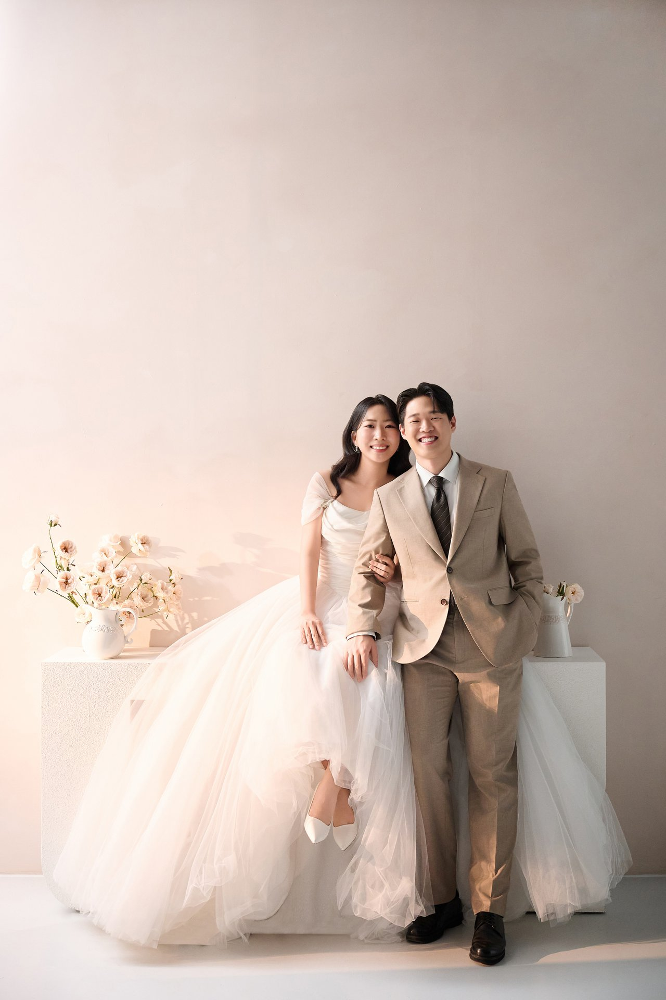

JAEJUN JANG & HYEEUN SHIM
2026 . 10 . 31
전주 더메이 호텔 2층 그랜드볼룸홀
SATURDAY, 31 OCTOBER 2026
OUR LOVE STORY
우리의 이야기
캠퍼스에서 시작해, 다섯 해를 지나
학생 시절 캠퍼스에서 만나
풋풋한 인연을 맺은 두 사람이
이제는 같은 직장에서
나란히 걷게 되었습니다.
듬직한 삼형제의 첫째 아들과
세상을 환하게 만드는
세 자매의 막내딸이 만나
하나의 가정을 이룹니다.
2026년 10월 31일,
저희 두 사람이 부부로서
첫걸음을 내딛습니다.
귀한 걸음으로 함께해 주신다면
더없는 기쁨으로 간직하겠습니다.
GROOM & BRIDE
신랑 · 신부
장영일 · 손순화
의 장남
장재준
심봉섭 · 민경란
의 막내딸
심혜은
WEDDING DATE
예식일
2026년 10월OCTOBER 2026
| 일 | 월 | 화 | 수 | 목 | 금 | 토 |
|---|---|---|---|---|---|---|
| 1 | 2 | 3 | ||||
| 4 | 5 | 6 | 7 | 8 | 9 | 10 |
| 11 | 12 | 13 | 14 | 15 | 16 | 17 |
| 18 | 19 | 20 | 21 | 22 | 23 | 24 |
| 25 | 26 | 27 | 28 | 29 | 30 | 31 |
2026년 10월 31일 토요일 오후 1시 20분
전주 더메이 호텔 2층 그랜드볼룸홀
장재준 · 심혜은의 결혼식까지
오늘, 저희 두 사람이
같은 길의 첫걸음을 내딛습니다.
함께 걸어가는 0번째 날입니다.
끝까지 축복해 주셔서 감사합니다.
2026년 10월 31일 토요일 오후 1시 20분, 전주 더메이 호텔 2층 그랜드볼룸홀
GALLERY
웨딩 갤러리
우리의 빛나는 순간들을
한 장씩 모아 두었습니다.
사진을 옆으로 넘겨 보세요. 누르면 크게 볼 수 있습니다.
1 / 15
LOCATION
오시는 길
전주 더메이 호텔
아래 버튼으로 지도 앱에서 위치를 확인하실 수 있습니다.
전주 더메이 호텔 2층 그랜드볼룸홀
전북 전주시 덕진구 기린대로 800
예식은 오후 1시 20분에 시작됩니다.
조금 여유 있게 도착해 주시면
편안히 함께하실 수 있습니다.
버스
휴비스 전주공장 정류장 하차 (도보 5분)
101, 103-2, 337, 383, 385, 386, 401, 402, 403, 420
자가용 · 주차
호텔 주차장 1,300대 무료 주차
네비게이션 검색: “전주 더메이 호텔” 또는 “기린대로 800”
차량이 몰리는 시간대에는
현장 안내에 따라 주시기 바랍니다.
택시
전주역에서 약 20분
전주고속버스터미널에서 약 15분
THANKS TO
마음 전하실 곳
-
신랑
장재준
카카오뱅크 3333-15-5858826
-
아버지
장영일
농협 352-9722-9075-93
-
어머니
손순화
신한 110-504-582910
-
신부
심혜은
기업 047-085733-01-013
-
아버지
심봉섭
농협 345-02-037794
-
어머니
민경란
농협 345-12-218264
RSVP
참석 여부 전달
참석 여부를 미리 알려주시면
자리를 준비하는 데 큰 도움이 됩니다.
귀한 시간 내어 주시는 모든 분들께
미리 감사드립니다.
GUEST BOOK
방명록
두 사람에게 전하고 싶은 말씀을
이곳에 남겨 주세요.
주신 한마디 한마디
오래도록 간직하겠습니다.
방명록을 불러오는 중입니다.
PHOTO ALBUM
하객 사진 공유
구글 포토 공유 앨범으로 이동합니다.
올려 주신 사진은 저희에게 그대로 전달됩니다.
사진은 예식 당일이 아니어도 언제든 올려 주셔도 됩니다.